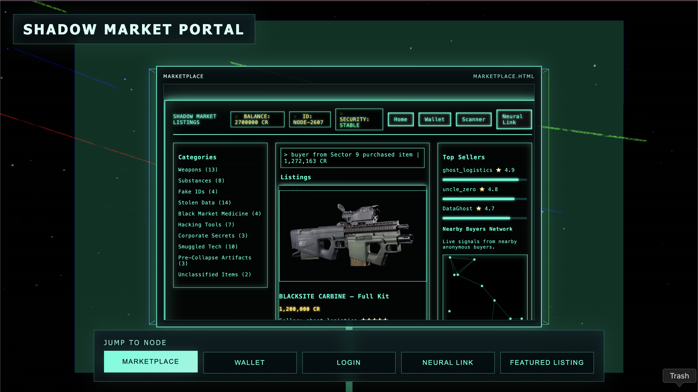
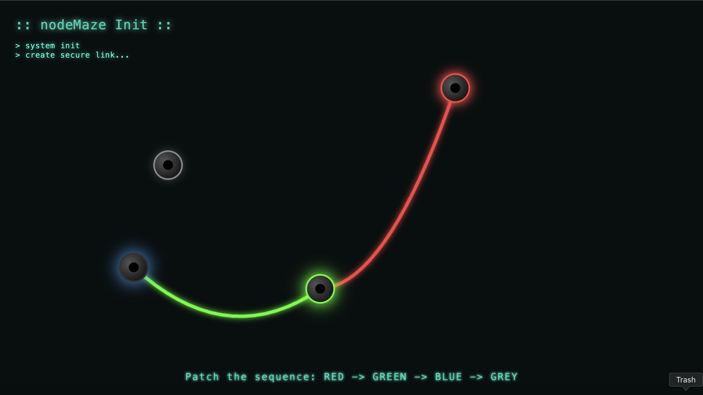
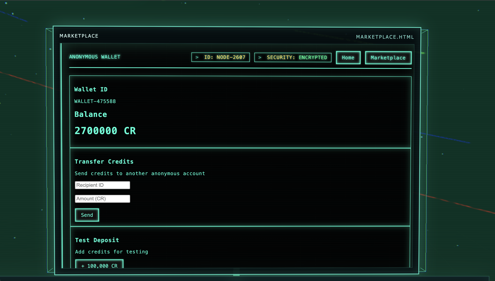

Shadow Market
Shadow Market is a speculative web project imagining a future where access to technology is restricted. In response, an underground digital marketplace appears where people trade tools, data, and devices through anonymous identities. The project explores how trust, reputation, and value might work in a hidden digital economy through an interactive website.
Built using HTML, CSS, and JavaScript, the project simulates a fictional platform where users browse items.


